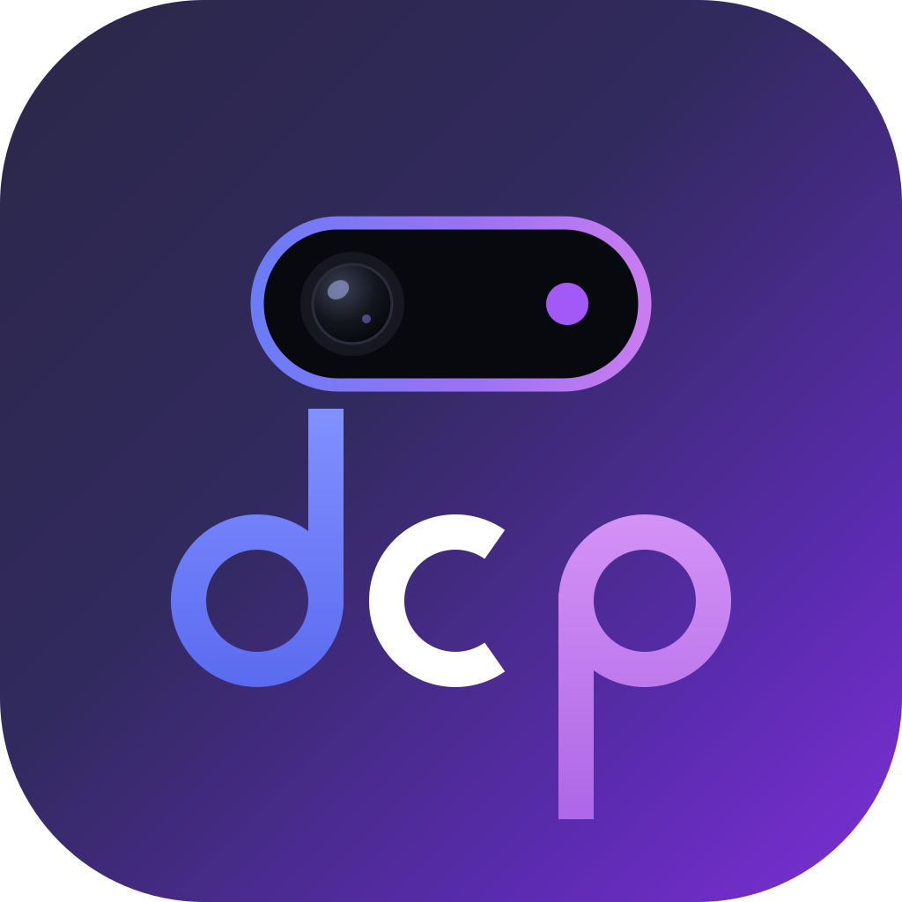

Dynamic Camera Punch
Live demonstration · v2.5.0 — the theme itself runs as a system overlay.
Variant A
Variant B
Both
Made by User (Elijah) (I hate pirating : ) )
HTML5 • CSS3 • vanilla ES6+ • zero dependencies